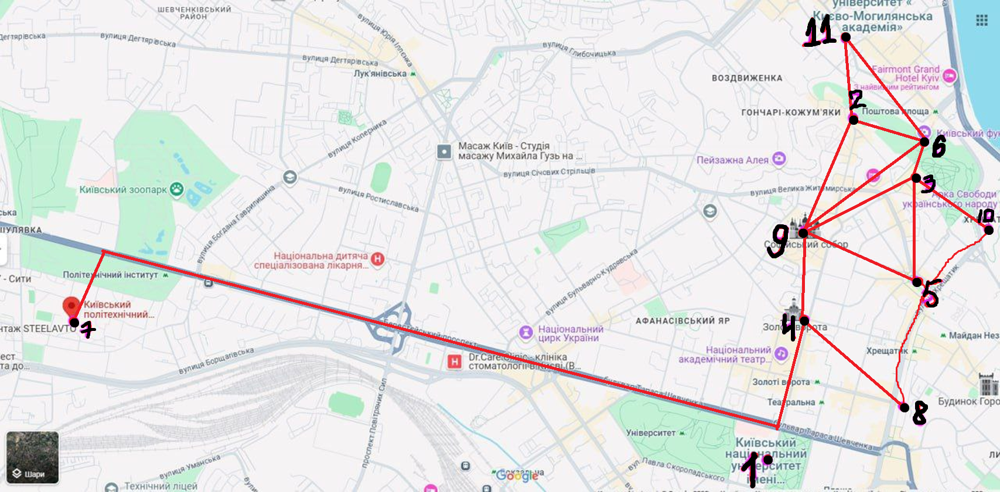

Налаштування
Оберіть функцію:
-- Оберіть функцію --
Distance (Проста відстань)
List (Список)
Оберіть алгоритм:
-- Оберіть алгоритм --
Dijkstra algorithm
Terri algorithm
Точка початку:
-- Оберіть точку початку --
1. Red Univesity
2. St. Andrew's Church
3. St. Michael's Golden-Domed Monastery
4. Golden Gates
5. Lyadski Gate
6. Funicular
7. KPI
8. Fountain on Khreschatyk
9. The Sophia Cathedral
10. National Philharmonic
11. One street museum
Точка призначення:
-- Оберіть точку призначення --
1. Red Univesity
2. St. Andrew's Church
3. St. Michael's Golden-Domed Monastery
4. Golden Gates
5. Lyadski Gate
6. Funicular
7. KPI
8. Fountain on Khreschatyk
9. The Sophia Cathedral
10. National Philharmonic
11. One street museum
Calculate
Reset Result
Оберіть алгоритм пошуку сильної зв'язності:
-- Оберіть функцію --
Алгоритм Тар'яна
Алгоритм компонент сильної зв'язності
Scc algorithm